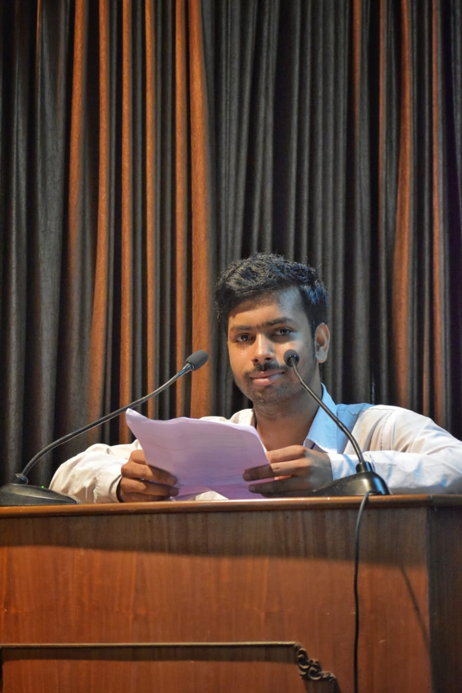
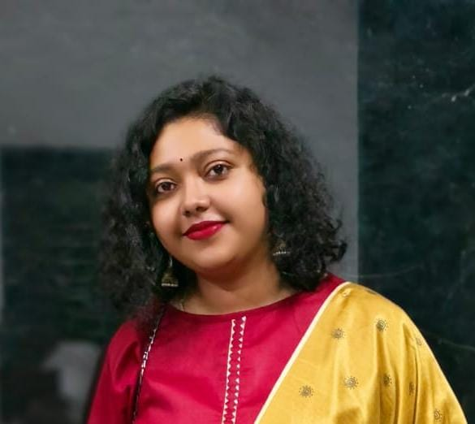
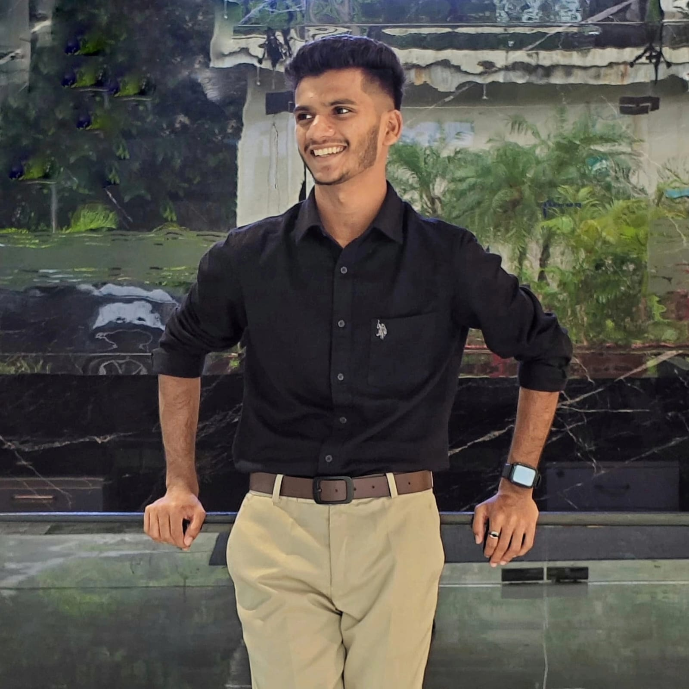
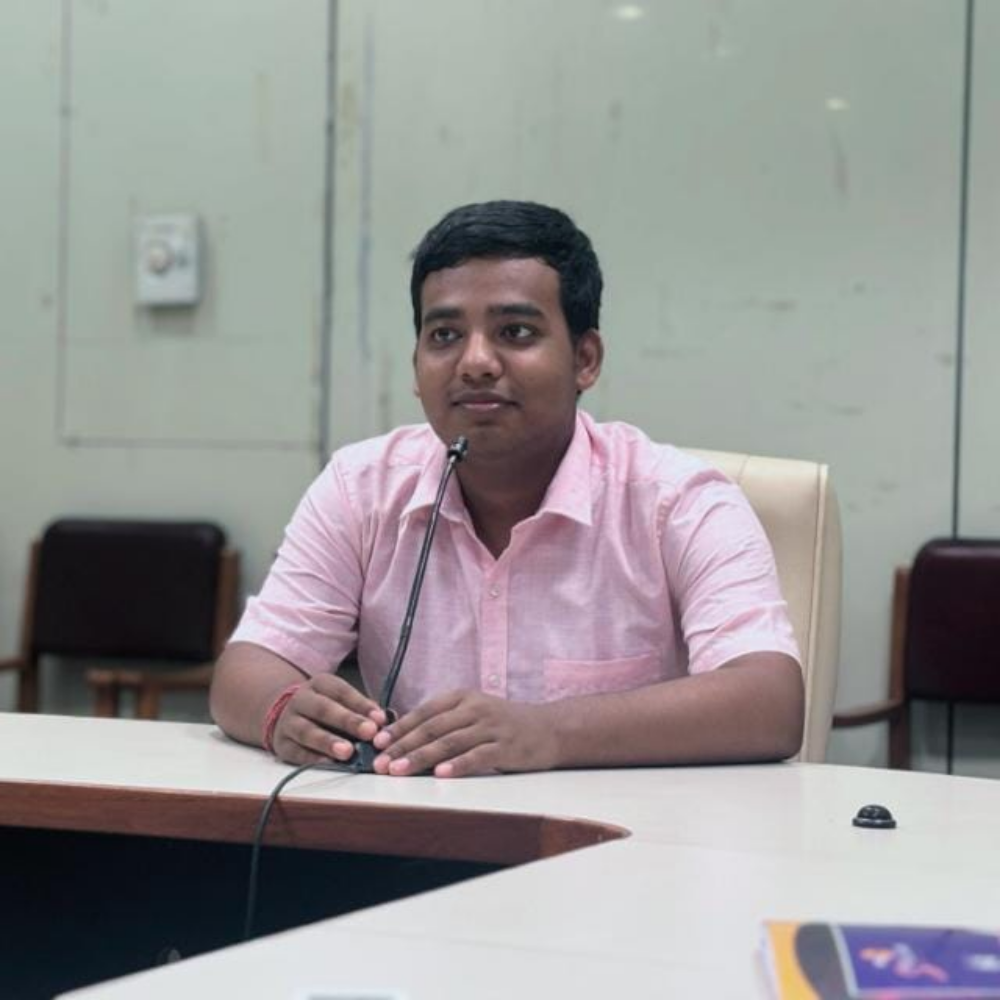

About the Chapter
The Indian Geophysical Union (IGU) is a premier scientific organization in India dedicated to promoting research and academic advancement in Earth Sciences. It serves as a national platform for scientists, researchers, and students engaged in geophysical studies.
IGU promotes activities in areas such as seismology, geomagnetism, meteorology, geodesy, oceanography, hydrology, and tectonophysics, encouraging interdisciplinary research and collaboration.
The IGU Student Chapter at IIT Bombay was inaugurated on 8th December 2017 to strengthen student engagement in geophysics and create a platform for academic interaction and learning.
The inaugural “Electrotek & Geometrics Endowment Lecture” was delivered by Mrinal K. Sen, offering valuable insights into modern geophysical research.
Since then, the chapter has actively organized guest lectures, seminars, workshops, and discussions, helping students engage with real-world geophysical problems and advancements.
Aims & Objectives
- Empower students with knowledge, skills, and exposure in Earth Sciences
- Organize seminars, workshops, conferences, and lecture series
- Encourage research and scientific publication
- Collaborate with national and international scientific bodies
- Support research funding and academic initiatives
- Promote interdisciplinary learning across geosciences
- Encourage participation in fieldwork and scientific training
Activities
- Guest lectures by renowned geoscientists
- Seminar series and technical talks
- Workshops on modern geophysical techniques
- Research discussions and student presentations
- Field-based learning programs
- Science outreach initiatives
Awards & Recognitions
- Hari Narain Lifetime Achievement Award
- Decennial Award
- Krishnan Medal
- JG Negi Young Scientist Award
- Anni Talwani Memorial Prize
Vision
The IGU Student Chapter aims to build a strong academic community of young geophysicists by fostering curiosity, innovation, and scientific excellence. It bridges classroom learning with real-world research to nurture future Earth scientists.
Council Members

Prof. Munukutla Radhakrishna
Faculty Advisor

About Me
I am a 2nd year M.Sc. Applied Geophysics student with a keen interest in Seismic, Gravity and Magnetic methods with a focus on structural interpretation. As President of the IGU Student Chapter, I am dedicated to bridging the gap between academia and industry by fostering collaborative learning and professional networking for the next generation of geoscientists

Sneha Ghosh
Vice President
About Me
I'm Sneha Ghosh, final year M.Sc. Applied Geology student at IIT Bombay. As the Vice President of the IGU Student Chapter, I am committed to fostering scientific curiosity, collaboration, and academic excellence among students. Our chapter aims to create a vibrant platform for learning, research discussions, and professional development in geophysics, encouraging young minds to explore Earth science and contribute meaningfully to the scientific community.

Muhammed Shamil C K
General Secretary
About Me
Final year MSc Geophysics student interested in seismic imaging. Serving as IGU Secretary to promote academic and industrial collaboration.

About Me
I am Mainak Roy, a final year student of M.Sc. Applied Geophysics at IIT Bombay having strong interest in the subject. As a Treasurer of IGU, IIT Bombay my goal is to bring the real world Geophysics applications to the fellow aspiring Geoscientists of my Institute and make a strong industry-academia collaboration before entering their career life .
Activities
2025-26
Speaker: Prof. N. V. Chalapathi Rao, Director of the National Centre for Earth Science Studies (NCESS)
Date: 22nd January,2026
Topic: The discussion centered around the strategic initiatives at NCESS and the evolving landscape of geological studies in India.
2024-25
Speaker: Dr. Labani Ray, Chief scientist, NGRI, Hyderabad
Date: 9th October,2024
2023-24
Speaker: Prof. A.P. Dimri, Director, IIGM
Date: 12th February,2024
Workshop: Python for Oil and Gas
Speaker: Divyanshu Vyas,Data Science Researcher, Shell
Date: 20th August, 2023
How to Join
Registration – Indian Geophysical Union Click here!